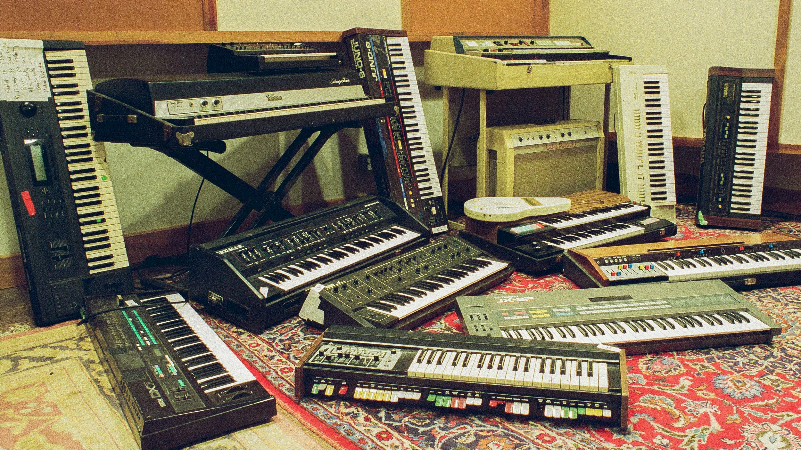

RECORDING
Quad Eight console 1971 with 16 MM61 channels × 16 output balanced channels
MCI - JH-110-8 1”
Apogee Symphony 64 Thunderbridge I/O 32-32
AVIOM A320 Personal Mixers (4)
Latest Pro Tools/Ableton Live
Tannoy SRM 10B
Yamaha NS-10M Studio